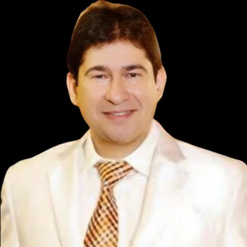

Director
Dr Shafiq Yasin
Director and Consultant Psychiatrist
The psychiatry team supports patients through consultation, inpatient care and follow-up.

Director and Consultant Psychiatrist
Psychiatrist

Psychiatrist
The team considers your medical history, concerns and preferences when discussing care. Where medication is appropriate, Dr Shafiq Yasin discusses the options with you and works with you to plan your care.
Getting to know your situation comes before any decision about treatment.
You are told which medications might help and why, and your questions are answered along the way.
Your treatment plan sets out the purpose and expected outcomes, and can be adjusted as you go.
Ask about appointments, admissions or telepsychiatry.